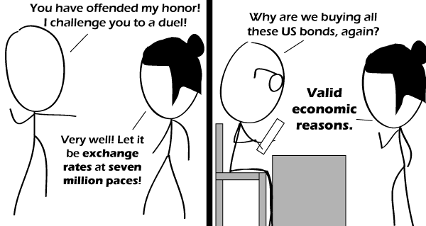

Comic JK 647
When I Feel Like It
⇤
<
?
>
⇥

⇤
<
?
>
⇥
Forum
.
RSS
.
Digg
.
Facebook
.
Reddit
.
Twitter
.
Stumbleupon
Enter your thoughts on number 647 here. Please, no spamming, trolling, phreaking or dueling with exchange rates. Before pre-pre-first Beth-2! Before pre-pre-first Infinity! Before Pre-pre-first Pre-pre-first pre-first first(: Last! not last tsrif(: what's the german supposed to mean? > "Diejenigen, die nicht wissen, wie das Internet nutzen, sind auf Unwissenheit verurteilt." > lol. "Ich möchte diesen Teppich nicht kaufen, bitte"? ;) Sie möchten kein Teppich kaufen?! Ich glaube das nicht! >> Google translates the first as something meaningful, and the second as gibberish. That must mean the second comes from someone who understands German, and the first probably came from Google to begin with. ;) >>Ich muss später das Teppich bei Ihnen kochen. Möchten Sie es mit mir kochen? >>> The second one comes from a german advertisement which plays a bit with the language - translated "I do not want to buy that carpet, please". >> ...or "over all." >>> or "zimbabwe rules" Last. Post-last. Post-Post-last. After Post-Post-last. After Post-Post-last Infinity!! First!!! Nicht Jetzt! seriously though - people don't know where "<countryname> über älles" comes from ? I find that somewhat disturbing... >Have some Umlauts: äöüÄÖÜß Your mother buys my sweet sticky bonds.